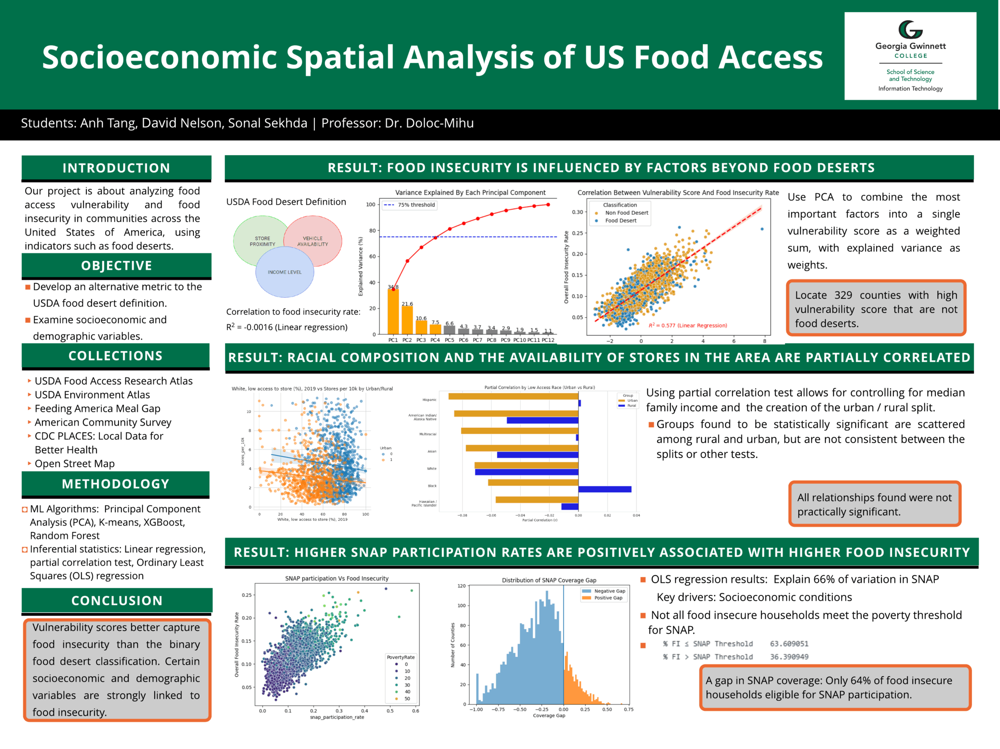

AI Website Maker
Food desert locations and food vulnerability both play a major role in how easy it is for a family to get the food they need to live. Our goal was to deconstruct the underlying factors that constitute a food desert and lead to increased food vulnerability to see if any causal elements surface that could be remedied through the implementation of local policies.
About Text
I am a senior at Georgia Gwinnett College, graduating this spring. I plan to enter the SAP field, focusing on Data Analysis in the accounting and finance sector.
About Text
1. DeepNotes
2. Discord
3. Streamlit
1. Principle Component Analysis
2. Linear Regression
3. KMeans
4. XGBoost
5. Random Forest
6. Gradient Boosting
1. Scipy
2. SKLearn
3. Matplotlib
4. SeaBorn
5. Plotly
1. Google Slides
2. APIs
3. Python
4. Markdown
Text Learn More
The USDA's Food Environment Atlas includes a section with data on food access at various levels, measured across different metrics. Using the different racial groups with low access to food listed here, each representing a percentage of their racial group's population in a county in conjunction with a dataset of supermarkets and grocery store locations sourced from Open Street Map, I aimed to identify if there was any relationship between the level of a race's low access population and the general access to grocery stores in a county.
Learn More

AI Website Maker
Data Sources
USDA Food Access Research Atlas
Dataset Link
American Community Survey
Dataset Link
USDA Environment Atlas
Dataset Link
CDC Places: Local Data for Better Health
Dataset Link
Feeding America Meal Gap
Dataset Link
Open Street Map
Dataset Link